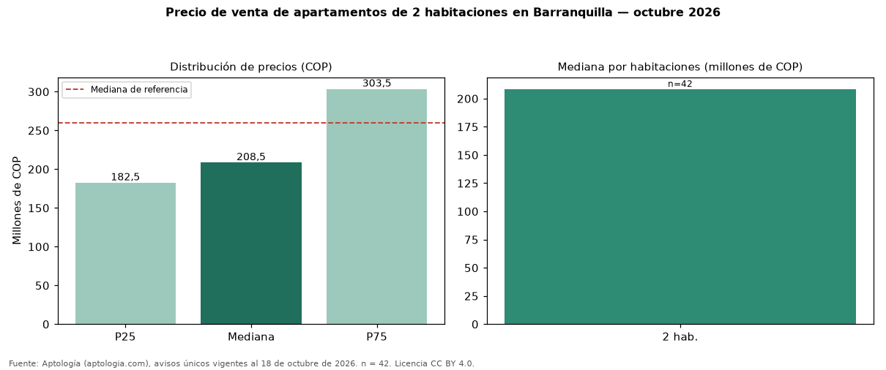

Precio de venta de apartamentos de 2 habitaciones en Barranquilla — octubre 2026
COP 208 millones es la mediana de venta de apartamentos de 2 habitaciones en Barranquilla, según 42 avisos únicos. Frente a apartamentos en Barranquilla (COP 260 millones), la diferencia es de 20 % por debajo. Por metro cuadrado, la mediana es COP 3.934.778/m² (+3 % frente a COP 3.823.009/m²), puesto 3 de 5 ciudades comparables. En el mismo grupo: 3 habitaciones, COP 375 millones. El área mediana es 57 m² (referencia: 64 m²). El estrato más frecuente es 3. El rango intercuartílico va de COP 182 millones a COP 304 millones (razón 1,7). Datos abiertos CC BY 4.0 de Aptología; fuente y búsqueda de inmuebles: https://www.aptologia.com/venta/barranquilla. Archivos: PDF de 2 páginas, CSV con las cifras y gráfica PNG.

| Avisos únicos | 42 |
|---|---|
| Percentil 25 | COP 182.500.000 |
| Mediana | COP 208.500.000 |
| Percentil 75 | COP 303.500.000 |
| Mediana por m² | COP 3.934.777 |
Fuente: avisos vigentes de portales inmobiliarios recopilados por Aptología, deduplicados (mínimo 30 avisos únicos por celda). Precios pedidos, no cerrados. Fecha: 2026-10-18.